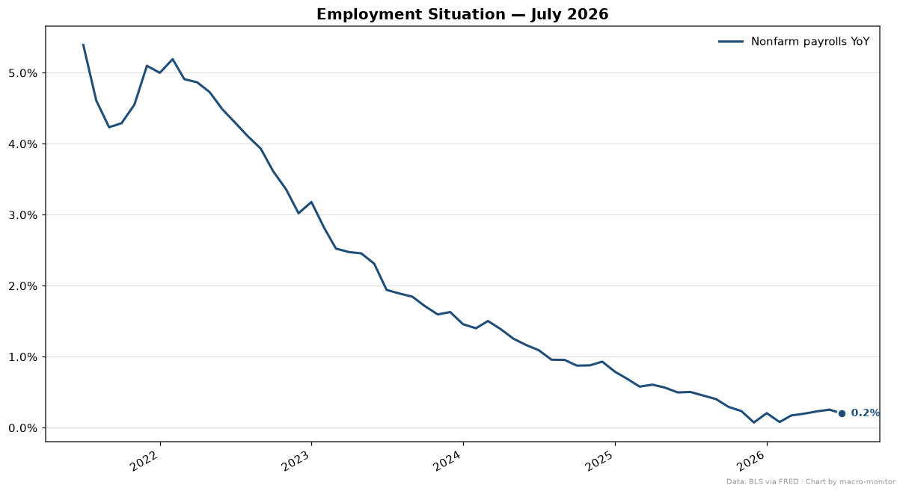
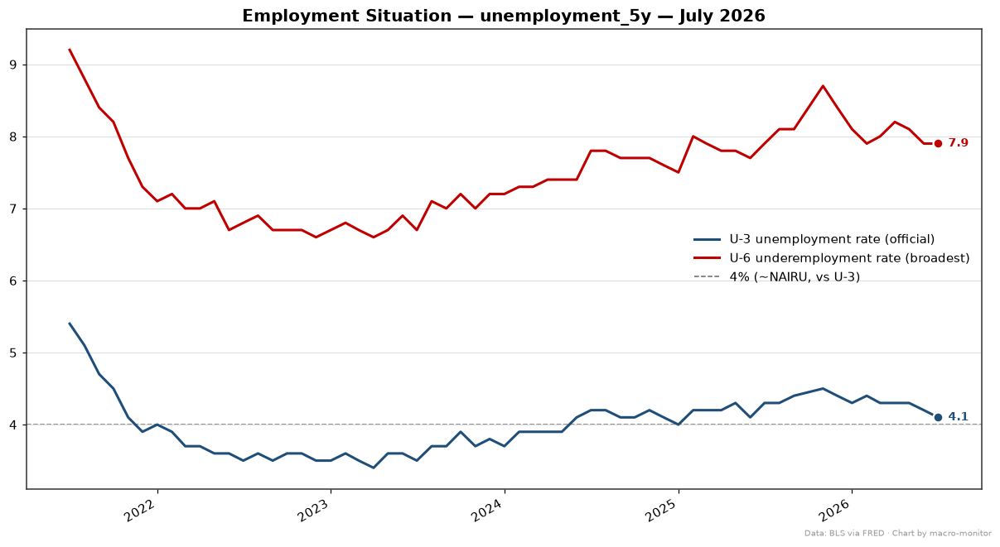
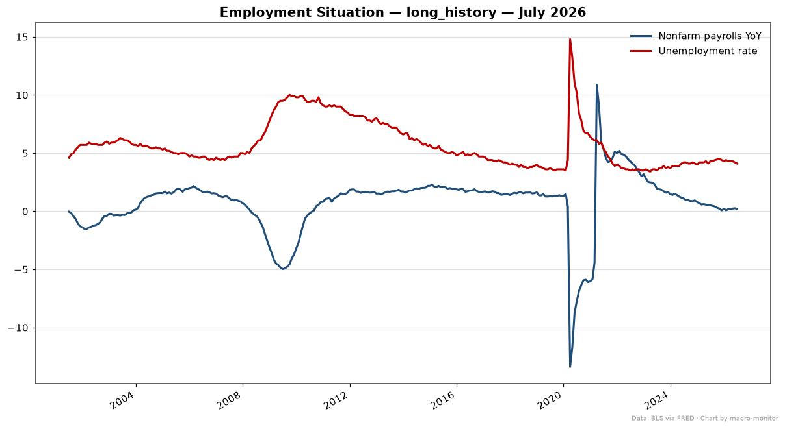
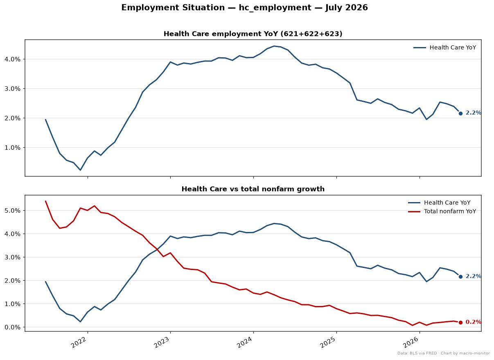
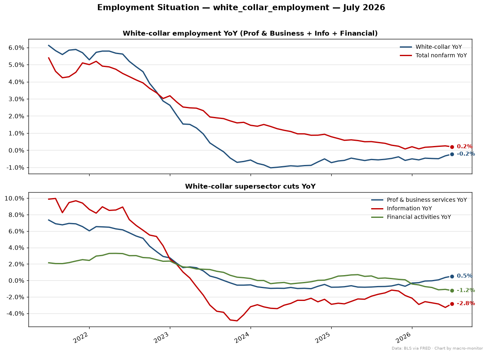

| Series | Primary | Also | Prior |
|---|---|---|---|
| Nonfarm payrolls (PAYEMS) | -23.0 | yoy_pct 0.20% | +20.0 |
| Unemployment rate (U-3) (UNRATE) | 4.10% | MoM -0.1pp · YoY -0.2pp | 4.20% |
| Underemployment rate (U-6) (U6RATE) | 7.90% | MoM +0.0pp · YoY +0.0pp | 7.90% |
Anchor: PAYEMS (mom_chg) · delta z-score vs 5y: -0.14σ
| Trend | Stat | Value |
|---|---|---|
| 3mo avg change | mean | +20.0K |
| 6mo avg change | mean | +44.3K |
| Series | Transform | Value |
|---|---|---|
| Health Care employment (NAICS 621+622+623) (HC_TOTAL, computed) healthcare | yoy_pct | 2.16% |
| White-collar employment (Prof & Business + Info + Financial) (WC_TOTAL, computed) white_collar | yoy_pct | -0.23% |
| Avg hourly earnings (private) (CES0500000003) | yoy_pct | 3.15% |
| Ambulatory health care services (CES6562100001) healthcare | yoy_pct | 2.41% |
| Hospitals (CES6562200001) healthcare | yoy_pct | 1.80% |
| Nursing & residential care (CES6562300001) healthcare | yoy_pct | 2.11% |
| Professional & business services (USPBS) white_collar | yoy_pct | 0.51% |
| Information (USINFO) white_collar | yoy_pct | -2.83% |
| Financial activities (USFIRE) white_collar | yoy_pct | -1.24% |




